Awesome Shizuku
Explore 500+ Shizuku apps and libraries, rish shell guides, and resources for running Android with elevated privileges — no root required.

Apps & Libraries
All open-source entries, plus closed-source and archived apps. Press / to search — filters are saved in the URL.
No matches. Try clearing a filter.
Start Your Shizuku Journey
New to Shizuku
Never used it? Learn what Shizuku is and how to start it with wireless debugging.
- No root needed
- Pairs over wireless ADB
- Runs until reboot
Ready to Use It
Install Shizuku (or a maintained fork) and grant apps access.
- Maintained forks
- Browse by category
- Install via ShizuStore
Developer
Build your own app on top of the Shizuku API and libraries.
- Shizuku-API docs
- Flutter & Kotlin libs
- Open-source examples
Major Guides
The rish Shell
Resources
📖Shizuku DocsOfficial documentation
📜Official rish DocsUpstream reference
🕷️Crawler ReportNew projects found automatically
🤖AutomateFlows that start Shizuku
Community
⭐GitHubStar & contribute
🗓️Daily ChangelogNew additions, daily
❓IssuesReport problems
⚡ShizukuThe original project
Annotations
- ✨ Recommended Personal recommendation: heavy Shizuku use or a hidden gem
- Paid 💰 Paid application
- IAP 💰 Contains in-app purchases
- Ads Contains ads
- Proprietary Not under a FOSS license (closed-source or source-available)
- n-day trial Payment required after n days
- Root Requires Shizuku to run in root mode
Why are closed-source apps separate? Shizuku gives apps high-level ADB access. The main directory only includes open-source and source-available apps so anyone can audit them. Closed-source apps require blind trust, so use the Source filter to view them separately.